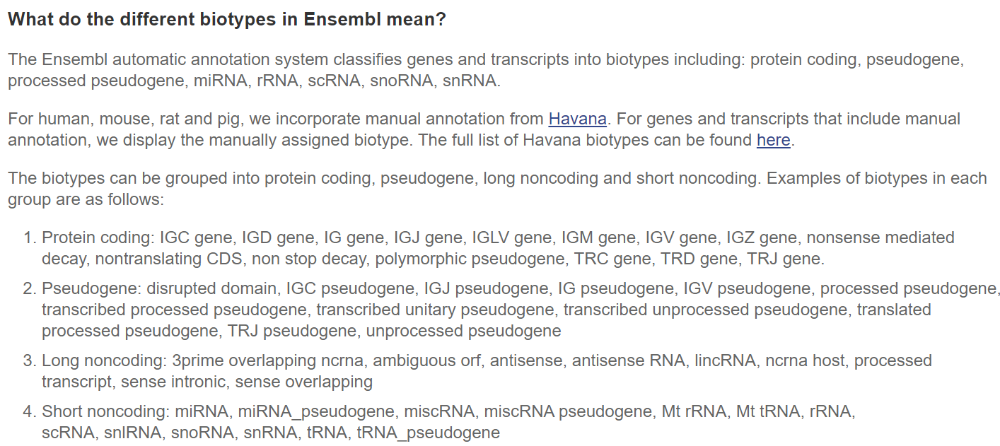

import os
os.getcwd()
try:
os.mkdir("../analysis/")
except FileExistsError:
print("Directory already exists")
os.chdir("../analysis")
os.getcwd()
Directory already exists
'/home/xie186/github/UMD_BIOI611_lab/analysis'
%%bash
/home/xie186/github/UMD_BIOI611_lab/notebook
Download reference genome
To download the reference for this lab, we use ENSEMBL database.
In ENSEMBL database, each species may have different releases of genome build. We use release-111 in this project.
The genome sequences can be obtained from the link below: https://ftp.ensembl.org/pub/release-111/fasta/caenorhabditis_elegans/dna/
The genoe anntation file in gtf format can be obtained here: https://ftp.ensembl.org/pub/release-111/gtf/caenorhabditis_elegans/
%%bash
mkdir -p reference/
wget -O reference/Caenorhabditis_elegans.WBcel235.dna.toplevel.fa.gz -nv https://ftp.ensembl.org/pub/release-111/fasta/caenorhabditis_elegans/dna/Caenorhabditis_elegans.WBcel235.dna.toplevel.fa.gz
gunzip reference/Caenorhabditis_elegans.WBcel235.dna.toplevel.fa.gz
2024-05-11 20:47:10 URL:https://ftp.ensembl.org/pub/release-111/fasta/caenorhabditis_elegans/dna/Caenorhabditis_elegans.WBcel235.dna.toplevel.fa.gz [30316631/30316631] -> "Caenorhabditis_elegans.WBcel235.dna.toplevel.fa.gz" [1]
%%bash
## A *fai file will be generated
samtools faidx reference/Caenorhabditis_elegans.WBcel235.dna.toplevel.fa
%%bash
wget -O reference/Caenorhabditis_elegans.WBcel235.111.gtf.gz -nv https://ftp.ensembl.org/pub/release-111/gtf/caenorhabditis_elegans/Caenorhabditis_elegans.WBcel235.111.gtf.gz
gunzip reference/Caenorhabditis_elegans.WBcel235.111.gtf.gz
2024-05-11 21:03:37 URL:https://ftp.ensembl.org/pub/release-111/gtf/caenorhabditis_elegans/Caenorhabditis_elegans.WBcel235.111.gtf.gz [8730028/8730028] -> "Caenorhabditis_elegans.WBcel235.111.gtf.gz" [1]
How many chromsomes there are
%%bash
grep '>' reference/Caenorhabditis_elegans.WBcel235.dna.toplevel.fa
>I dna:chromosome chromosome:WBcel235:I:1:15072434:1 REF
>II dna:chromosome chromosome:WBcel235:II:1:15279421:1 REF
>III dna:chromosome chromosome:WBcel235:III:1:13783801:1 REF
>IV dna:chromosome chromosome:WBcel235:IV:1:17493829:1 REF
>V dna:chromosome chromosome:WBcel235:V:1:20924180:1 REF
>X dna:chromosome chromosome:WBcel235:X:1:17718942:1 REF
>MtDNA dna:chromosome chromosome:WBcel235:MtDNA:1:13794:1 REF
How many genes there are
%%bash
grep -v '#' reference/Caenorhabditis_elegans.WBcel235.111.gtf \
|awk '$3=="gene"' \
|sed 's/.*gene_biotype "//' \
|sed 's/";//'|sort |uniq -c \
| sort -k1,1n
22 rRNA
100 antisense_RNA
129 snRNA
194 lincRNA
261 miRNA
346 snoRNA
634 tRNA
2128 pseudogene
7764 ncRNA
15363 piRNA
19985 protein_coding

Source: https://useast.ensembl.org/Help/Faq?id=468eudogeneBuild reference genome
%%bash
awk '$3=="gene"' reference/Caenorhabditis_elegans.WBcel235.111.gtf |head -n 3
awk '$3=="gene"' reference/Caenorhabditis_elegans.WBcel235.111.gtf |wc -l
V WormBase gene 9244402 9246360 . - . gene_id "WBGene00000003"; gene_name "aat-2"; gene_source "WormBase"; gene_biotype "protein_coding";
V WormBase gene 11466842 11470663 . - . gene_id "WBGene00000007"; gene_name "aat-6"; gene_source "WormBase"; gene_biotype "protein_coding";
V WormBase gene 15817410 15817846 . - . gene_id "WBGene00000014"; gene_name "abf-3"; gene_source "WormBase"; gene_biotype "protein_coding";
46926
%%bash
STAR --runThreadN 23 --runMode genomeGenerate --genomeDir STAR_ref \
--genomeFastaFiles reference/Caenorhabditis_elegans.WBcel235.dna.toplevel.fa \
--sjdbGTFfile reference/Caenorhabditis_elegans.WBcel235.111.gtf \
--genomeSAindexNbases 12
%%bash
ls -sh STAR_ref/
total 2.6G
4.0K chrLength.txt
4.0K chrNameLength.txt
4.0K chrName.txt
4.0K chrStart.txt
7.9M exonGeTrInfo.tab
3.2M exonInfo.tab
1.6M geneInfo.tab
119M Genome
4.0K genomeParameters.txt
8.0K Log.out
973M SA
1.5G SAindex
2.9M sjdbInfo.txt
3.0M sjdbList.fromGTF.out.tab
2.4M sjdbList.out.tab
3.1M transcriptInfo.tab
Download the reads
| SRR_ID | Sample_name |
|---|---|
| SRR15694101 | N2_day7_rep2 |
| SRR15694102 | N2_day7_rep1 |
| SRR15694100 | N2_day7_rep3 |
| SRR15694099 | N2_day1_rep1 |
| SRR15694098 | N2_day1_rep2 |
| SRR15694097 | N2_day1_rep3 |
%%bash
mkdir -p raw_data/
curl -L ftp://ftp.sra.ebi.ac.uk/vol1/fastq/SRR156/002/SRR15694102/SRR15694102.fastq.gz -o raw_data/N2_day7_rep1.fastq.gz
curl -L ftp://ftp.sra.ebi.ac.uk/vol1/fastq/SRR156/001/SRR15694101/SRR15694101.fastq.gz -o raw_data/N2_day7_rep2.fastq.gz
curl -L ftp://ftp.sra.ebi.ac.uk/vol1/fastq/SRR156/000/SRR15694100/SRR15694100.fastq.gz -o raw_data/N2_day7_rep3.fastq.gz
curl -L ftp://ftp.sra.ebi.ac.uk/vol1/fastq/SRR156/099/SRR15694099/SRR15694099.fastq.gz -o raw_data/N2_day1_rep1.fastq.gz
curl -L ftp://ftp.sra.ebi.ac.uk/vol1/fastq/SRR156/098/SRR15694098/SRR15694098.fastq.gz -o raw_data/N2_day1_rep2.fastq.gz
curl -L ftp://ftp.sra.ebi.ac.uk/vol1/fastq/SRR156/097/SRR15694097/SRR15694097.fastq.gz -o raw_data/N2_day1_rep3.fastq.gz
% Total % Received % Xferd Average Speed Time Time Time Current
Dload Upload Total Spent Left Speed
16 4123M 16 684M 0 0 655k 0 1:47:22 0:17:49 1:29:33 519k
curl: (18) transfer closed with 3605679051 bytes remaining to read
% Total % Received % Xferd Average Speed Time Time Time Current
Dload Upload Total Spent Left Speed
Check the read quality
%%bash
ls
Clean up data
%%bash
# Clean up the folders
cleanup=True
if [ cleanup ]; then
rm -rf Caenorhabditis_elegans.WBcel235.dna.toplevel.fa* Caenorhabditis_elegans.WBcel235.111.gtf*\
rm -rf STAR_ref
rm -rf raw_data/
fi